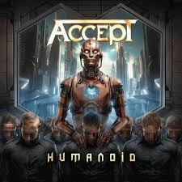
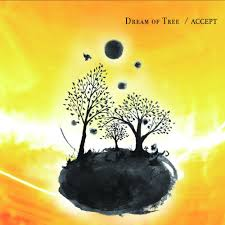

Discografía
Estos son algunos de los álbumes más representativos de esta banda, con enlace directo a YouTube para escuchar el disco completo.
Álbumes Destacados


Humanoid (2024)
Un álbum que promete llevar el sonido de Accept a nuevas alturas.
Escuchar en YouTube
